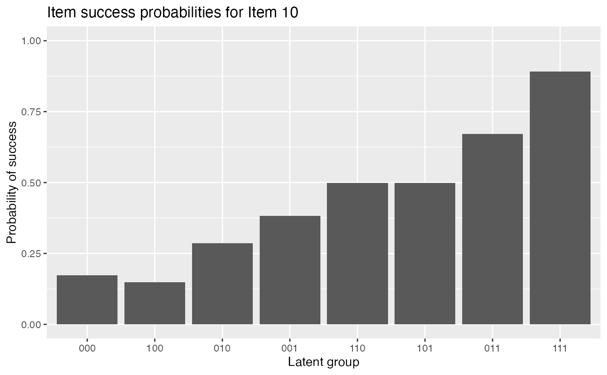
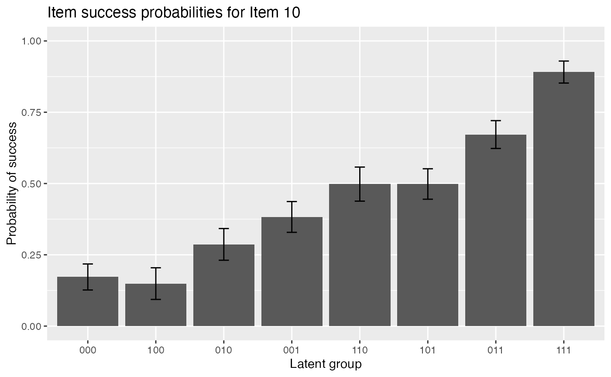

Higher-order GDINA Estimation
Wenchao
2022-08-14
Source:vignettes/OnlineExercises/HOGDINA_example.Rmd
HOGDINA_example.RmdIntroduction
This tutorial is created using R markdown and knitr. It illustrates how to use the GDINA R pacakge (version 2.9.3) to estimate the higher-order G-DINA model.
Model Estimation
The following code estimates the higher-order G-DINA model.
## GDINA R Package (version 2.9.3; 2022-08-13)
## For tutorials, see https://wenchao-ma.github.io/GDINA
# A simulated data in GDINA package
dat <- sim10GDINA$simdat
Q <- sim10GDINA$simQ
# Estimating GDINA model
est <- GDINA(dat = dat, Q = Q, model = "GDINA", att.dist = "higher.order", higher.order = list(model = "2PL"))##
Iter = 1 Max. abs. change = 0.29086 Deviance = 12723.23
Iter = 2 Max. abs. change = 0.05035 Deviance = 11962.12
Iter = 3 Max. abs. change = 0.02906 Deviance = 11909.69
Iter = 4 Max. abs. change = 0.01934 Deviance = 11885.04
Iter = 5 Max. abs. change = 0.01421 Deviance = 11871.64
Iter = 6 Max. abs. change = 0.01075 Deviance = 11863.59
Iter = 7 Max. abs. change = 0.00836 Deviance = 11858.26
Iter = 8 Max. abs. change = 0.00668 Deviance = 11854.50
Iter = 9 Max. abs. change = 0.00546 Deviance = 11851.73
Iter = 10 Max. abs. change = 0.00469 Deviance = 11849.64
Iter = 11 Max. abs. change = 0.00404 Deviance = 11848.03
Iter = 12 Max. abs. change = 0.00350 Deviance = 11846.78
Iter = 13 Max. abs. change = 0.00304 Deviance = 11845.79
Iter = 14 Max. abs. change = 0.00265 Deviance = 11844.99
Iter = 15 Max. abs. change = 0.00232 Deviance = 11844.35
Iter = 16 Max. abs. change = 0.00204 Deviance = 11843.82
Iter = 17 Max. abs. change = 0.00179 Deviance = 11843.39
Iter = 18 Max. abs. change = 0.00162 Deviance = 11843.02
Iter = 19 Max. abs. change = 0.00148 Deviance = 11842.72
Iter = 20 Max. abs. change = 0.00135 Deviance = 11842.46
Iter = 21 Max. abs. change = 0.00124 Deviance = 11842.24
Iter = 22 Max. abs. change = 0.00114 Deviance = 11842.05
Iter = 23 Max. abs. change = 0.00106 Deviance = 11841.88
Iter = 24 Max. abs. change = 0.00098 Deviance = 11841.74
Iter = 25 Max. abs. change = 0.00091 Deviance = 11841.61
Iter = 26 Max. abs. change = 0.00085 Deviance = 11841.50
Iter = 27 Max. abs. change = 0.00079 Deviance = 11841.40
Iter = 28 Max. abs. change = 0.00074 Deviance = 11841.31
Iter = 29 Max. abs. change = 0.00069 Deviance = 11841.23
Iter = 30 Max. abs. change = 0.00064 Deviance = 11841.16
Iter = 31 Max. abs. change = 0.00060 Deviance = 11841.10
Iter = 32 Max. abs. change = 0.00056 Deviance = 11841.04
Iter = 33 Max. abs. change = 0.00053 Deviance = 11840.99
Iter = 34 Max. abs. change = 0.00049 Deviance = 11840.94
Iter = 35 Max. abs. change = 0.00046 Deviance = 11840.89
Iter = 36 Max. abs. change = 0.00043 Deviance = 11840.85
Iter = 37 Max. abs. change = 0.00041 Deviance = 11840.82
Iter = 38 Max. abs. change = 0.00038 Deviance = 11840.78
Iter = 39 Max. abs. change = 0.00036 Deviance = 11840.75
Iter = 40 Max. abs. change = 0.00034 Deviance = 11840.72
Iter = 41 Max. abs. change = 0.00032 Deviance = 11840.70
Iter = 42 Max. abs. change = 0.00029 Deviance = 11840.67
Iter = 43 Max. abs. change = 0.00027 Deviance = 11840.65
Iter = 44 Max. abs. change = 0.00025 Deviance = 11840.63
Iter = 45 Max. abs. change = 0.00023 Deviance = 11840.62
Iter = 46 Max. abs. change = 0.00019 Deviance = 11840.62
Iter = 47 Max. abs. change = 0.00018 Deviance = 11840.62
Iter = 48 Max. abs. change = 0.00016 Deviance = 11840.62
Iter = 49 Max. abs. change = 0.00015 Deviance = 11840.61
Iter = 50 Max. abs. change = 0.00013 Deviance = 11840.61
Iter = 51 Max. abs. change = 0.00012 Deviance = 11840.61
Iter = 52 Max. abs. change = 0.00011 Deviance = 11840.61
Iter = 53 Max. abs. change = 0.00010 Deviance = 11840.61
Iter = 54 Max. abs. change = 0.00010 Deviance = 11840.60Summary Information
The following code extracts the summary information from higher-order GDINA estimates.
#####################################
#
# Summary Information
#
#####################################
# print estimation information
est## Call:
## GDINA(dat = dat, Q = Q, model = "GDINA", att.dist = "higher.order",
## higher.order = list(model = "2PL"))
##
## GDINA version 2.9.3 (2022-08-13)
## ===============================================
## Data
## -----------------------------------------------
## # of individuals groups items
## 1000 1 10
## ===============================================
## Model
## -----------------------------------------------
## Fitted model(s) = GDINA
## Attribute structure = higher.order
## Higher-order model = 2PL
## Attribute level = Dichotomous
## ===============================================
## Estimation
## -----------------------------------------------
## Number of iterations = 54
##
## For the final iteration:
## Max abs change in item success prob. = 0.0001
## Max abs change in mixing proportions = 0.0000
## Change in -2 log-likelihood = 0.0018
## Converged? = TRUE
##
## Time used = 0.1461 secs
# summary information
summary(est)##
## Test Fit Statistics
##
## Loglik = -5920.30
##
## AIC = 11928.60 | penalty [2 * p] = 88.00
## BIC = 12144.54 | penalty [log(n) * p] = 303.94
## CAIC = 12188.54 | penalty [(log(n) + 1) * p] = 347.94
## SABIC = 12004.80 | penalty [log((n + 2)/24) * p] = 164.19
##
## No. of parameters (p) = 44
## No. of estimated item parameters = 38
## No. of fixed item parameters = 0
## No. of distribution parameters = 6
##
## Attribute Prevalence
##
## Level0 Level1
## A1 0.5028 0.4972
## A2 0.5008 0.4992
## A3 0.4764 0.5236
AIC(est) #AIC## [1] 11928.6
BIC(est) #BIC## [1] 12144.54
logLik(est) #log-likelihood value## 'log Lik.' -5920.301 (df=44)
deviance(est) # deviance: -2 log-likelihood## [1] 11840.6
npar(est) # number of parameters## No. of total parameters = 44
## No. of population parameters = 6
## No. of free item parameters = 38
## No. of fixed item parameters = 0
nobs(est) # number of observations## [1] 1000You can use extract with argument discrim to extract discrimination indices. The first column gives \(P(1)-P(0)\) and the second column gives the GDINA discrimination index.
# discrimination indices
extract(est, "discrim")## P(1)-P(0) GDI
## Item 1 0.6975500 0.12164019
## Item 2 0.6467191 0.10456115
## Item 3 0.8208489 0.16807397
## Item 4 0.7792326 0.08397458
## Item 5 0.7091316 0.10165626
## Item 6 0.7371628 0.10032593
## Item 7 0.7157708 0.06496647
## Item 8 0.7847172 0.08920947
## Item 9 0.7049419 0.06303146
## Item 10 0.7186472 0.05473475Model Parameters
#####################################
#
# structural parameters
#
#####################################The following code gives the item probalities of each reduced latent classes. As shown below, the probability of answering item 1 correctly for individuals who do not master the required attribute is 0.2032, and the probability of answering item 1 correctly for individuals who master the required attribute is 0.9007:
coef(est) # item probabilities of success for each reduced latent class## $`Item 1`
## P(0) P(1)
## 0.2032 0.9007
##
## $`Item 2`
## P(0) P(1)
## 0.1382 0.7849
##
## $`Item 3`
## P(0) P(1)
## 0.0872 0.9081
##
## $`Item 4`
## P(00) P(10) P(01) P(11)
## 0.1132 0.2974 0.4748 0.8924
##
## $`Item 5`
## P(00) P(10) P(01) P(11)
## 0.1077 0.0738 0.0896 0.8169
##
## $`Item 6`
## P(00) P(10) P(01) P(11)
## 0.1839 0.9005 0.9272 0.9211
##
## $`Item 7`
## P(00) P(10) P(01) P(11)
## 0.0545 0.4731 0.3889 0.7703
##
## $`Item 8`
## P(00) P(10) P(01) P(11)
## 0.1106 0.2682 0.2732 0.8953
##
## $`Item 9`
## P(00) P(10) P(01) P(11)
## 0.1000 0.3771 0.4168 0.8049
##
## $`Item 10`
## P(000) P(100) P(010) P(001) P(110) P(101) P(011) P(111)
## 0.1723 0.1490 0.2866 0.3828 0.4980 0.4984 0.6717 0.8909The following code gives the item probalities of each reduced latent classes with standard errors.
coef(est, withSE = TRUE) # item probabilities of success & standard errors## $`Item 1`
## P(0) P(1)
## Est. 0.2032 0.9007
## S.E. 0.0258 0.0224
##
## $`Item 2`
## P(0) P(1)
## Est. 0.1382 0.7849
## S.E. 0.0224 0.0247
##
## $`Item 3`
## P(0) P(1)
## Est. 0.0872 0.9081
## S.E. 0.0213 0.0199
##
## $`Item 4`
## P(00) P(10) P(01) P(11)
## Est. 0.1132 0.2974 0.4748 0.8924
## S.E. 0.0279 0.0369 0.0377 0.0284
##
## $`Item 5`
## P(00) P(10) P(01) P(11)
## Est. 0.1077 0.0738 0.0896 0.8169
## S.E. 0.0248 0.0253 0.0256 0.0335
##
## $`Item 6`
## P(00) P(10) P(01) P(11)
## Est. 0.1839 0.9005 0.9272 0.9211
## S.E. 0.0411 0.0316 0.0286 0.0226
##
## $`Item 7`
## P(00) P(10) P(01) P(11)
## Est. 0.0545 0.4731 0.3889 0.7703
## S.E. 0.0239 0.0394 0.0367 0.0321
##
## $`Item 8`
## P(00) P(10) P(01) P(11)
## Est. 0.1106 0.2682 0.2732 0.8953
## S.E. 0.0262 0.0384 0.0388 0.0348
##
## $`Item 9`
## P(00) P(10) P(01) P(11)
## Est. 0.1000 0.3771 0.4168 0.8049
## S.E. 0.0293 0.0381 0.0363 0.0286
##
## $`Item 10`
## P(000) P(100) P(010) P(001) P(110) P(101) P(011) P(111)
## Est. 0.1723 0.1490 0.2866 0.3828 0.4980 0.4984 0.6717 0.8909
## S.E. 0.0456 0.0555 0.0556 0.0540 0.0597 0.0534 0.0488 0.0386The following code gives delta parameters.
coef(est, what = "delta") # delta parameters## $`Item 1`
## d0 d1
## 0.2032 0.6976
##
## $`Item 2`
## d0 d1
## 0.1382 0.6467
##
## $`Item 3`
## d0 d1
## 0.0872 0.8208
##
## $`Item 4`
## d0 d1 d2 d12
## 0.1132 0.1842 0.3616 0.2334
##
## $`Item 5`
## d0 d1 d2 d12
## 0.1077 -0.0340 -0.0182 0.7613
##
## $`Item 6`
## d0 d1 d2 d12
## 0.1839 0.7165 0.7432 -0.7226
##
## $`Item 7`
## d0 d1 d2 d12
## 0.0545 0.4186 0.3344 -0.0372
##
## $`Item 8`
## d0 d1 d2 d12
## 0.1106 0.1576 0.1626 0.4645
##
## $`Item 9`
## d0 d1 d2 d12
## 0.1000 0.2771 0.3168 0.1110
##
## $`Item 10`
## d0 d1 d2 d3 d12 d13 d23 d123
## 0.1723 -0.0232 0.1143 0.2106 0.2346 0.1388 0.1746 -0.1310The following code gives delta parameters with standard errors.
coef(est, what = "delta", withSE = TRUE) # delta parameters## $`Item 1`
## d0 d1
## Est. 0.2032 0.6976
## S.E. 0.0258 0.0384
##
## $`Item 2`
## d0 d1
## Est. 0.1382 0.6467
## S.E. 0.0224 0.0368
##
## $`Item 3`
## d0 d1
## Est. 0.0872 0.8208
## S.E. 0.0213 0.0317
##
## $`Item 4`
## d0 d1 d2 d12
## Est. 0.1132 0.1842 0.3616 0.2334
## S.E. 0.0279 0.0493 0.0494 0.0738
##
## $`Item 5`
## d0 d1 d2 d12
## Est. 0.1077 -0.0340 -0.0182 0.7613
## S.E. 0.0248 0.0402 0.0373 0.0620
##
## $`Item 6`
## d0 d1 d2 d12
## Est. 0.1839 0.7165 0.7432 -0.7226
## S.E. 0.0411 0.0564 0.0545 0.0743
##
## $`Item 7`
## d0 d1 d2 d12
## Est. 0.0545 0.4186 0.3344 -0.0372
## S.E. 0.0239 0.0493 0.0458 0.0749
##
## $`Item 8`
## d0 d1 d2 d12
## Est. 0.1106 0.1576 0.1626 0.4645
## S.E. 0.0262 0.0490 0.0498 0.0795
##
## $`Item 9`
## d0 d1 d2 d12
## Est. 0.1000 0.2771 0.3168 0.1110
## S.E. 0.0293 0.0523 0.0497 0.0742
##
## $`Item 10`
## d0 d1 d2 d3 d12 d13 d23 d123
## Est. 0.1723 -0.0232 0.1143 0.2106 0.2346 0.1388 0.1746 -0.1310
## S.E. 0.0456 0.0759 0.0759 0.0760 0.1232 0.1173 0.1113 0.1693The following code gives \(P(0)\) and 1-\(P(0)\), which is guessing and slipping parameters.
coef(est, what = "gs") # guessing and slip parameters## guessing slip
## Item 1 0.2032 0.0993
## Item 2 0.1382 0.2151
## Item 3 0.0872 0.0919
## Item 4 0.1132 0.1076
## Item 5 0.1077 0.1831
## Item 6 0.1839 0.0789
## Item 7 0.0545 0.2297
## Item 8 0.1106 0.1047
## Item 9 0.1000 0.1951
## Item 10 0.1723 0.1091The following code gives guessing and slipping parameters with standard errors.
coef(est, what = "gs", withSE = TRUE) # guessing and slip parameters & standard errors## guessing slip SE[guessing] SE[slip]
## Item 1 0.2032 0.0993 0.0258 0.0224
## Item 2 0.1382 0.2151 0.0224 0.0247
## Item 3 0.0872 0.0919 0.0213 0.0199
## Item 4 0.1132 0.1076 0.0279 0.0284
## Item 5 0.1077 0.1831 0.0248 0.0335
## Item 6 0.1839 0.0789 0.0411 0.0226
## Item 7 0.0545 0.2297 0.0239 0.0321
## Item 8 0.1106 0.1047 0.0262 0.0348
## Item 9 0.1000 0.1951 0.0293 0.0286
## Item 10 0.1723 0.1091 0.0456 0.0386
# Estimated proportions of latent classesThe following code gives the slope and intercept parameters for attributes. As you can see, the estimated slope and intercept for the first attribute are 0.1 and -0.0113, respectively:
coef(est,"lambda")## slope intercept
## A1 0.1000 -0.0113
## A2 0.1000 -0.0034
## A3 0.2885 0.0962
# success probabilities for each latent classThe following code gives item success probabilities for all latent classes,
coef(est,"LCprob")## 000 100 010 001 110 101 011 111
## Item 1 0.2032 0.9007 0.2032 0.2032 0.9007 0.9007 0.2032 0.9007
## Item 2 0.1382 0.1382 0.7849 0.1382 0.7849 0.1382 0.7849 0.7849
## Item 3 0.0872 0.0872 0.0872 0.9081 0.0872 0.9081 0.9081 0.9081
## Item 4 0.1132 0.2974 0.1132 0.4748 0.2974 0.8924 0.4748 0.8924
## Item 5 0.1077 0.1077 0.0738 0.0896 0.0738 0.0896 0.8169 0.8169
## Item 6 0.1839 0.9005 0.9272 0.1839 0.9211 0.9005 0.9272 0.9211
## Item 7 0.0545 0.4731 0.0545 0.3889 0.4731 0.7703 0.3889 0.7703
## Item 8 0.1106 0.2682 0.2732 0.1106 0.8953 0.2682 0.2732 0.8953
## Item 9 0.1000 0.1000 0.3771 0.4168 0.3771 0.4168 0.8049 0.8049
## Item 10 0.1723 0.1490 0.2866 0.3828 0.4980 0.4984 0.6717 0.8909
#####################################
#
# person parameters
#
#####################################The following code returns EAP estimates of attribute patterns (for the first six individuals). As you can see, the EAP estimate of attribute profile for the first individual is (1, 0, 1):
head(personparm(est)) # EAP estimates of attribute profiles## A1 A2 A3
## [1,] 1 0 1
## [2,] 1 1 1
## [3,] 0 1 1
## [4,] 1 1 1
## [5,] 0 0 1
## [6,] 1 0 0By specifying what argument, the following code gives MAP estimates of attribute patterns (for the first six individuals).
head(personparm(est, what = "MAP")) # MAP estimates of attribute profiles## A1 A2 A3 multimodes
## 1 1 0 1 FALSE
## 2 1 1 1 FALSE
## 3 0 1 1 FALSE
## 4 1 1 1 FALSE
## 5 0 0 1 FALSE
## 6 0 0 0 FALSEThe following code extracts MLE estimates of attribute patterns (for the first six individuals).
head(personparm(est, what = "MLE")) # MLE estimates of attribute profiles## A1 A2 A3 multimodes
## 1 1 0 1 FALSE
## 2 1 1 1 FALSE
## 3 0 1 1 FALSE
## 4 1 1 1 FALSE
## 5 0 0 1 FALSE
## 6 0 0 0 FALSESome Plots
#####################################
#
# Plots
#
#####################################
#plot item response functions for item 10The following code gives item response functions of item 10.
plot(est, item = 10)
The following code gives item response functions of item 10 with error bars.
plot(est, item = 10, withSE = TRUE) # with error bars
The following code plots mastery probabilities of three attributes for individuals 1,20 and 50.
#plot mastery probability for individuals 1, 20 and 50
plot(est, what = "mp", person = c(1, 20, 50))
Advanced Topics
#####################################
#
# Advanced elements
#
#####################################
head(indlogLik(est)) # individual log-likelihood## 000 100 010 001 110 101
## [1,] -15.142191 -8.197153 -13.830202 -9.016174 -7.481585 -3.474602
## [2,] -19.086601 -12.141563 -15.065894 -13.165445 -8.717277 -7.623874
## [3,] -15.571108 -10.733399 -11.618320 -10.838405 -10.497155 -9.065509
## [4,] -17.884018 -10.766515 -15.950084 -11.193610 -10.505429 -6.123014
## [5,] -8.631499 -9.859584 -13.116923 -3.597618 -14.282566 -6.872611
## [6,] -6.393041 -7.084425 -9.114859 -9.264090 -6.623678 -11.293498
## 011 111
## [1,] -10.019126 -5.752634
## [2,] -7.229304 -2.962812
## [3,] -5.448388 -7.907418
## [4,] -7.822446 -4.940081
## [5,] -10.933919 -14.661851
## [6,] -14.300850 -13.826351
head(indlogPost(est)) # individual log-posterior## 000 100 010 001 110 101
## [1,] -11.8567382 -4.942598 -10.567736 -5.66443809 -4.240265 -0.1256323
## [2,] -16.2280557 -9.313915 -12.230336 -10.24061717 -5.902864 -4.7018114
## [3,] -10.3159539 -5.509143 -6.386154 -5.51696927 -5.286135 -3.7468384
## [4,] -13.3338064 -6.247202 -11.422860 -6.57711575 -5.999351 -1.5092849
## [5,] -5.1454207 -6.404404 -9.653832 -0.04525788 -10.840621 -3.3230154
## [6,] -0.8667376 -1.589020 -3.611543 -3.67150395 -1.141508 -5.7036777
## 011 111
## [1,] -6.6622454 -2.38876524
## [2,] -4.2993303 -0.02585015
## [3,] -0.1218066 -2.57384895
## [4,] -3.2008066 -0.31145302
## [5,] -7.3764129 -11.09735712
## [6,] -8.7031189 -8.22163173
extract(est,"designmatrix") #design matrix## [[1]]
## [,1] [,2]
## [1,] 1 0
## [2,] 1 1
##
## [[2]]
## [,1] [,2]
## [1,] 1 0
## [2,] 1 1
##
## [[3]]
## [,1] [,2]
## [1,] 1 0
## [2,] 1 1
##
## [[4]]
## [,1] [,2] [,3] [,4]
## [1,] 1 0 0 0
## [2,] 1 1 0 0
## [3,] 1 0 1 0
## [4,] 1 1 1 1
##
## [[5]]
## [,1] [,2] [,3] [,4]
## [1,] 1 0 0 0
## [2,] 1 1 0 0
## [3,] 1 0 1 0
## [4,] 1 1 1 1
##
## [[6]]
## [,1] [,2] [,3] [,4]
## [1,] 1 0 0 0
## [2,] 1 1 0 0
## [3,] 1 0 1 0
## [4,] 1 1 1 1
##
## [[7]]
## [,1] [,2] [,3] [,4]
## [1,] 1 0 0 0
## [2,] 1 1 0 0
## [3,] 1 0 1 0
## [4,] 1 1 1 1
##
## [[8]]
## [,1] [,2] [,3] [,4]
## [1,] 1 0 0 0
## [2,] 1 1 0 0
## [3,] 1 0 1 0
## [4,] 1 1 1 1
##
## [[9]]
## [,1] [,2] [,3] [,4]
## [1,] 1 0 0 0
## [2,] 1 1 0 0
## [3,] 1 0 1 0
## [4,] 1 1 1 1
##
## [[10]]
## [,1] [,2] [,3] [,4] [,5] [,6] [,7] [,8]
## [1,] 1 0 0 0 0 0 0 0
## [2,] 1 1 0 0 0 0 0 0
## [3,] 1 0 1 0 0 0 0 0
## [4,] 1 0 0 1 0 0 0 0
## [5,] 1 1 1 0 1 0 0 0
## [6,] 1 1 0 1 0 1 0 0
## [7,] 1 0 1 1 0 0 1 0
## [8,] 1 1 1 1 1 1 1 1
extract(est,"linkfunc") #link functions## [1] "identity" "identity" "identity" "identity" "identity" "identity"
## [7] "identity" "identity" "identity" "identity"## R version 4.2.0 (2022-04-22 ucrt)
## Platform: x86_64-w64-mingw32/x64 (64-bit)
## Running under: Windows 10 x64 (build 22000)
##
## Matrix products: default
##
## locale:
## [1] LC_COLLATE=English_United States.utf8
## [2] LC_CTYPE=English_United States.utf8
## [3] LC_MONETARY=English_United States.utf8
## [4] LC_NUMERIC=C
## [5] LC_TIME=English_United States.utf8
##
## attached base packages:
## [1] stats graphics grDevices utils datasets methods base
##
## other attached packages:
## [1] GDINA_2.9.3
##
## loaded via a namespace (and not attached):
## [1] Rcpp_1.0.9 rprojroot_2.0.3 digest_0.6.29
## [4] utf8_1.2.2 mime_0.12 truncnorm_1.0-8
## [7] R6_2.5.1 alabama_2022.4-1 evaluate_0.15
## [10] highr_0.9 ggplot2_3.3.6 pillar_1.8.0
## [13] rlang_1.0.4 rstudioapi_0.13 jquerylib_0.1.4
## [16] nloptr_2.0.3 rmarkdown_2.14 pkgdown_2.0.6
## [19] textshaping_0.3.6 desc_1.4.1 labeling_0.4.2
## [22] stringr_1.4.0 munsell_0.5.0 shiny_1.7.2
## [25] compiler_4.2.0 numDeriv_2016.8-1.1 httpuv_1.6.5
## [28] xfun_0.31 pkgconfig_2.0.3 systemfonts_1.0.4
## [31] htmltools_0.5.3 Rsolnp_1.16 tidyselect_1.1.2
## [34] tibble_3.1.8 fansi_1.0.3 dplyr_1.0.9
## [37] later_1.3.0 MASS_7.3-56 grid_4.2.0
## [40] jsonlite_1.8.0 xtable_1.8-4 gtable_0.3.0
## [43] lifecycle_1.0.1 magrittr_2.0.3 scales_1.2.0
## [46] cli_3.3.0 stringi_1.7.8 cachem_1.0.6
## [49] farver_2.1.1 fs_1.5.2 promises_1.2.0.1
## [52] bslib_0.4.0 ellipsis_0.3.2 ragg_1.2.2
## [55] vctrs_0.4.1 generics_0.1.3 tools_4.2.0
## [58] glue_1.6.2 purrr_0.3.4 parallel_4.2.0
## [61] fastmap_1.1.0 yaml_2.3.5 colorspace_2.0-3
## [64] shinydashboard_0.7.2 memoise_2.0.1 knitr_1.39
## [67] sass_0.4.2